Fashion Promotion · Manchester Met · BA Hons
instagram.com/katie_g_runs/
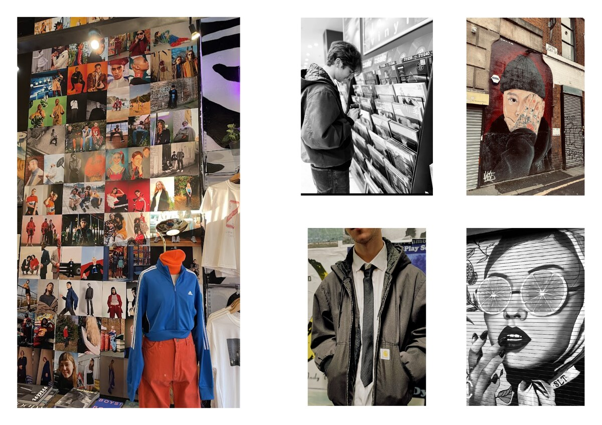

Fashion Promotion


About Katie
Final-year BA Hons Fashion Promotion student at Manchester Metropolitan University. Passionate about female empowerment, sustainability, and inclusive storytelling. Skilled in Adobe InDesign and Photoshop, with real-world experience developing brand strategies, editorial content, and social media campaigns. Currently collaborating with a brand focused on feminism, body positivity, and LGBTQ+ rights.

Selected Work
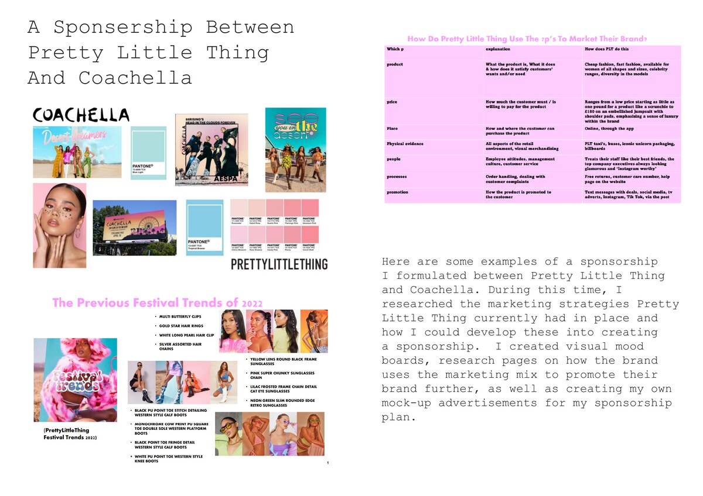
01
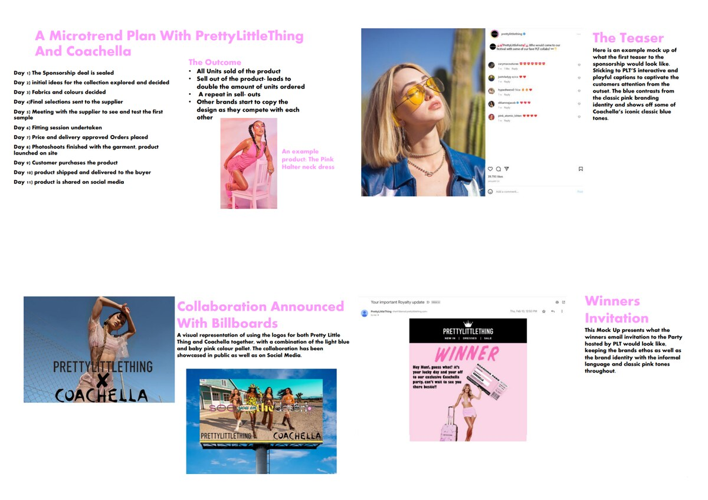
01b
First-Class Honours

02

03

03b

04
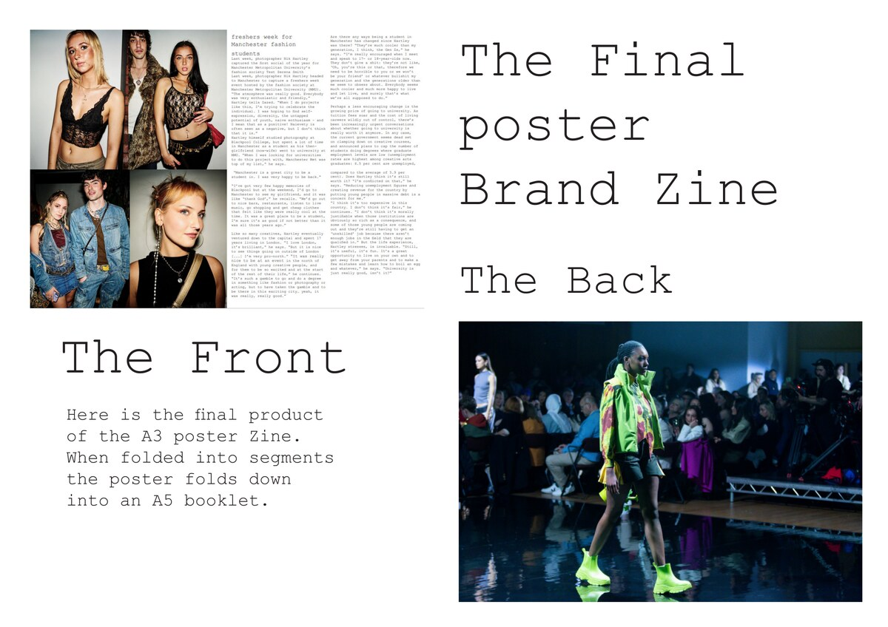
05
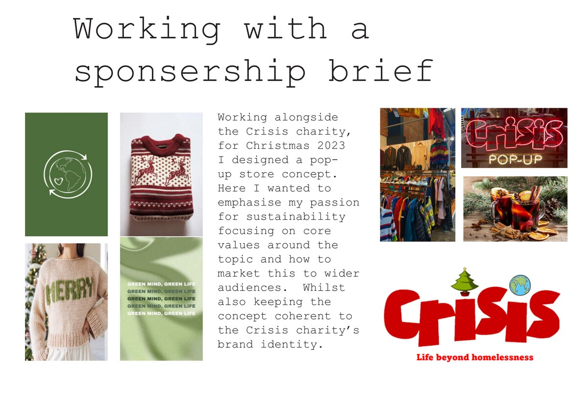
06
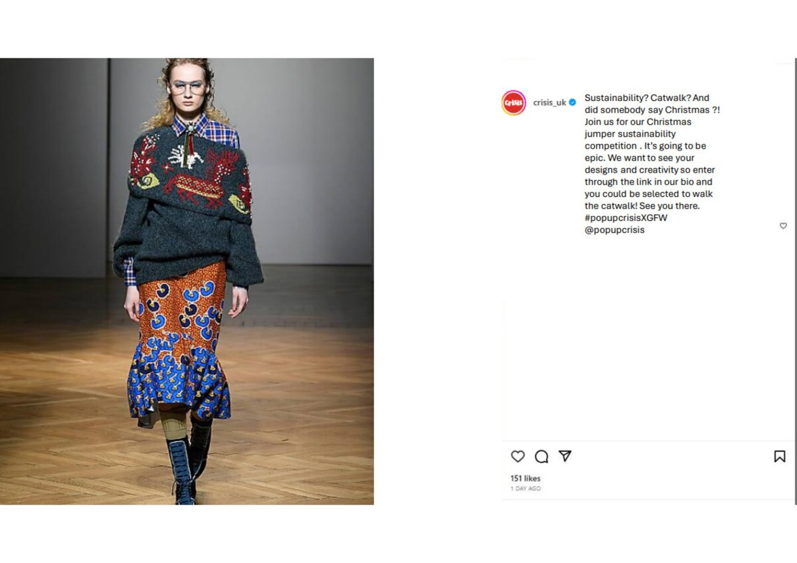
06b
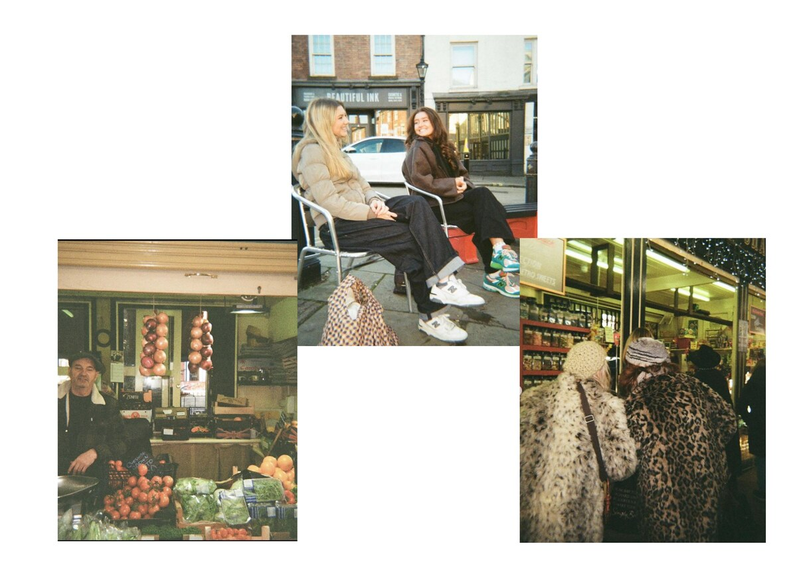
+

+
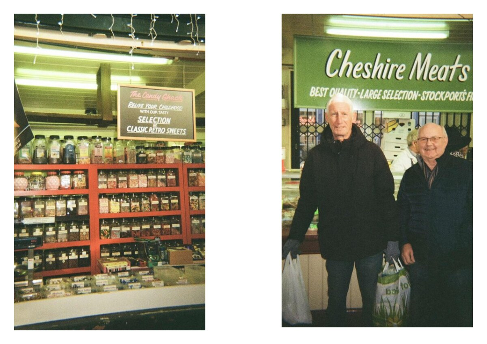
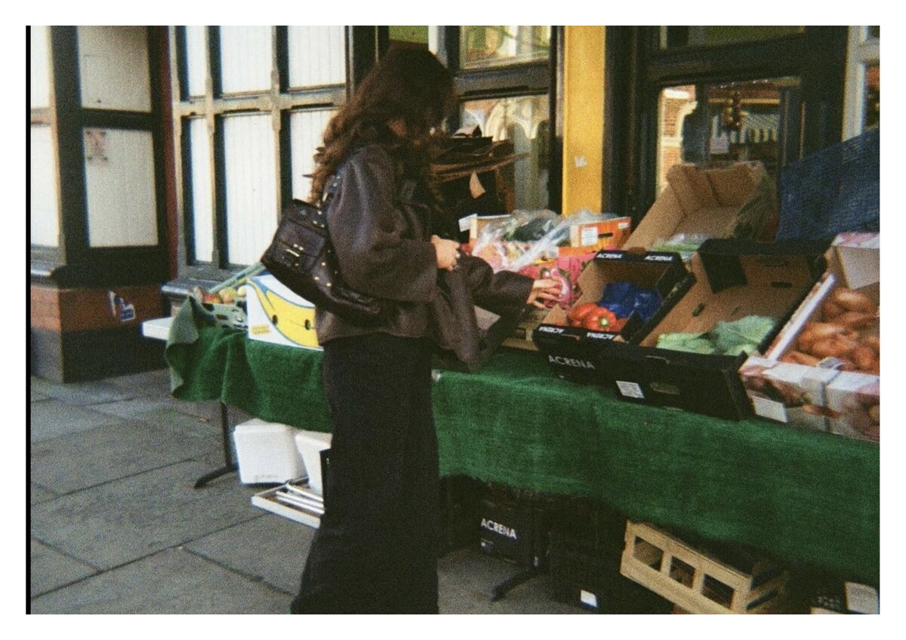
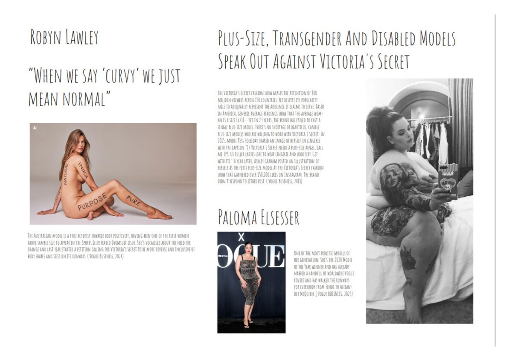
Experience
Social Media Content Creator
Becky Kayll — Designer & Brand Owner
Directing photoshoots, editing and developing photographs for use across social media and the brand website. Building a consistent visual identity for an independent fashion label.
Content Creator & Collaborator
Feminist / LGBTQ+ Brand
Shooting and producing social media content for a brand centred on feminism, body positivity, and LGBTQ+ rights — directing shoots and managing creative output.
Lead Photographer & Interviewer
New Balance × Made in UK
Directed photoshoots and conducted interviews at Stockport Market for a New Balance zine brief exploring traditional markets and British craft. Shot on film.
CAD & Editorial Designer
MFI × Dazed Magazine Runway Event
Produced an A3 poster zine (folding to A5 booklet) for a fashion runway event in collaboration with Dazed magazine using Photoshop and InDesign in CAD workshops.
Get In Touch
Available for freelance content creation, brand collaborations, and graduate opportunities in fashion promotion and marketing.
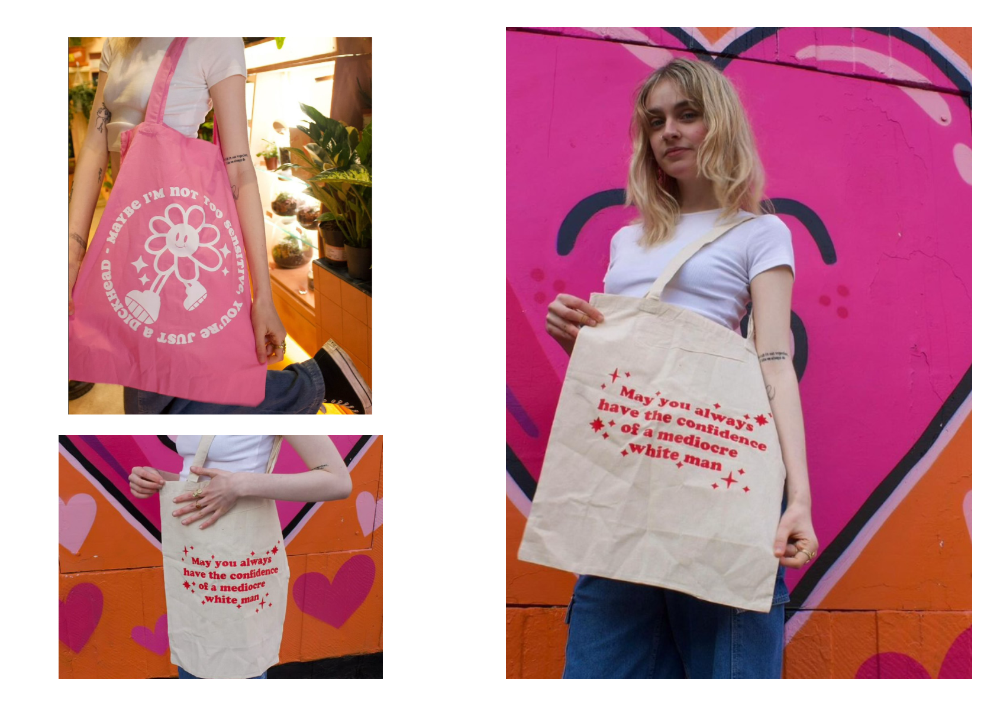